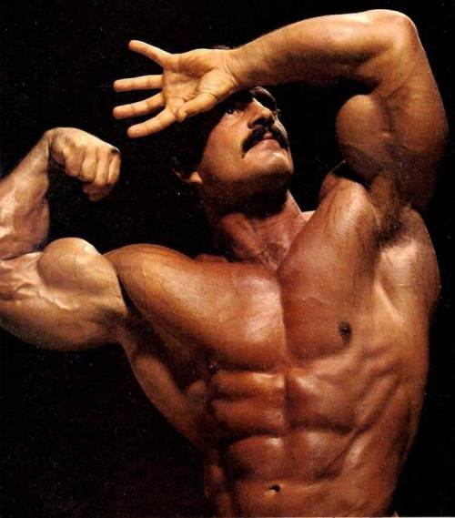

Mike Mentzer był kultowym kulturystą, wyznawcą Obiektywizmu i dla wielu ludzi w sportach sylwetkowych, punktem odniesienia. John Little w swojej książce: "The Wisdom of Mark MENTZER" opisuje go tak:
"Mike MENTZER stale utrzymywał, że budowanie charakteru jest znacznie ważniejsze niż budowanie muskulatury. Sam był żywym przykładem osiągania perfekcji formy poprzez precyzyjne użycie swojego rozumu. Jego wyżyłowane ciało było personifikacją triumfu ludzkiej woli nad siłami natury oraz miesięcy, czy lat bólu, wyrzeczeń i nadludzkiego wysiłku, niezbędnego by zbudować ciało, które wygląda jak żywa, ruszająca się forma sztuki. Był symbolem nie tylko tego co możliwe, gdy nakierujemy na to swój umysł, ale przede wszystkim tego, że każdy człowiek – kobieta i mężczyzna – może osiągnąć coś podobnego"
Zrwóć baczną uwagę na to że, jeśli kulturysta mówi że jest coś ważniejszego od budowania masy mięśniowej to musi być coś na rzeczy. Zapytasz więc: jak mam kształtować swój charakter? Mentzer radzi:
"Najważniejszym elementem jest WYBÓR. Musisz postanowić budować swój charakter; musisz uznawać sam charakter i proces jego budowania za wysoką wartość. To krok numer jeden. Po tym jak zrozumiesz, że posiadasz coś takiego jak wola, czyli kiedy uzmysłowisz sobie POTĘGĘ WYBORU, musisz rozpoznać CECHY charakteru, które ci imponują a następnie uczynić je integralną częścią swojej osobowości. (...) Kiedy już je określisz, reszta w znacznym stopniu wydarzy się poniekąd automatycznie, szczególnie jeśli jedną z tych wartości będzie ROZSĄDEK – wtedy wszystko stanie się bardziej logiczne i dużo łatwiejsze. (...) Wcześniej czy później trafisz na FILOZOFIĘ, która zacznie przewodzić twoimi działaniami. Nie zapomnij jednak używać ROZSĄDKU jako elementu kluczowego."
A więc, określasz cechy, które chcesz posiadać i zaczynasz się zachowywać tak, jakbyś je już posiadał. Jak aktor – z tym, że cech tych nie odgrywasz przez innymi – odgrywasz je przed sobą. To Ty masz się na to „nabrać”. To ma być Twój automatyzm a wszystko co naturalne wychodzi ze środka – nie z zewnątrz. Achilles nie musi udawać przed innymi, że jest Achillesem. Mentzer dalej mówi:
"Wszystko to czym jestem – i czym nie jestem – jest bezpośrednią konsekwencją dokonanych przeze mnie wyborów. Oraz tych nie dokonanych"
"Mike studiował filozofię, by lepiej odróżniać prawdę od fałszu, sztukę by lepiej zrozumieć jej znaczenie i cel, logikę, by bardziej precyzyjnie wyrażać swoje myśli, nauki, które pozwalały mu głębiej poznać fizjologię ludzkiego ciała i sposoby jego wzmacniania, biznes, by żyć godnie nie z pracy dla innych a z pracy dla siebie samego – i na własnych warunkach oraz komunikację by lepiej wyrażać wszystko to, czego już się nauczył."

"Jedynym sposobem uzyskania i utrzymywania najwyższej samooceny jest bezwzględne trzymanie się rzeczywistości i rozsądku. Ci, którzy tej zasady nie stosowali byli całkowicie poza obszarem mojego zainteresowania. Nieboraki te bez przerwy wpadały w pułapki kolejnej mody czy trendu. Tego typu histerycznym mistykom nie dawało się niczego wytłumaczyć. Nic nie przerażało ich bardziej niż odłączenie się od tego, co robi większość. Wszystko co inne, wszystko co nie miało akceptacji większości – wpędzało ich w trwogę. Nigdy tego nie rozumiałem, bo nigdy tej zadziwiającej wady nie posiadałem – tego potwornego pragnienia akceptacji i uznania. Zamiast, jak winorośl ciasno oplatać wysokie drzewo, zawsze wolałem stać samotnie, pozostając INTELEKTUALNIE, EMOCJONALNIE i MORALNIE SAMOWYSTARCZALNYM."
A ty? Też szukasz akceptacji i uznania u innych?
"Mike MENTZER, z tego co mi wiadomo, był pierwszym w historii kulturystą, który dział filozofii zwany estetyką potraktował bardzo poważnie. Każda poza była bardzo dokładnie wybrana i określona – nie tylko po to, by wyeksponować daną grupę mięśni, ale, przede wszystkim, by stała się inspirującym przekazem dla wszystkich oglądających. Większość kulturystów traktuje pozowanie jako formę zapewniania rozrywki. Zamiast przekazywać coś publiczności (intencję sztuki) pragną oni by to widownia przekazywała coś im (miłość, podziw, entuzjazm). Jednak prawdziwa SZTUKA KULTURYSTYKI nie polega na podlizywaniu się grupie czy naprawianiu swojego kruchego ego." (Patrz: zdjęcie)
Na ile to co Ty robisz w życiu robisz by przekazać swoje wartości i filozofię – a na ile by zebrać parę punktów od publiki? Ile Twoje ciało mówi o Twojej FILOZOFII? A Twoje finanse?
Pomyśl i napisz co ty w swoim życiu możesz trakować jako formę sztuki:
"Cechował go niezmordowany ETOS POSTĘPU – całkowite przeciwieństwo stagnacji. Ta obsesja ROŚNIĘCIA – nie tylko fizycznie ale i mentalnie – pozwalała mu uczyć się w oparciu tak o zwycięstwa jak i porażki. (…) Mike doszedł bowiem do wniosku, że jedyne nagrody, które mają naprawdę znaczenie to te, które dostajesz za JAKOŚĆ włożonej pracy"
"MENTZER był przekonany, że kulturystyka opiera się na najwyższej umiejętności człowieka – umiejętności KREATYWNEGO TWORZENIA. Umysł nakazuje a ciało słucha i w ten sposób, dzięki sile umysłu i sile ciała powstaje IDEAŁ – a tym samym powstaje SZTUKA."
I na koniec:
"Również jesteś przedstawicielem tego wyjątkowego gatunku a osiągnięcia najwybitniejszych ludzi w historii mogą być wodą na twój młyn. To twoje dziedzictwo. Więc niech ten podziw cię zainspiruje. Przestań zajmować się tym co bezcelowe, małe i pokurczone. (…) I nigdy nie spadnij do poziomu przeciętności, porzucając swoje ideały, wartości, cele – i w finalnym rozrachunku: swoje poczucie wartości. Trzymaj się tej WIELKIEJ DOSTOJNEJ WIZJI i nigdy nie zdradź ognia; nadaj mu jednak kształt, cel i rzeczywisty wymiar. Nigdy nie sprowadź się jedynie do bycia kulturystą – niech twoje mięśnie będą symbolem siły woli i zwycięstwa ROZSĄDKU."